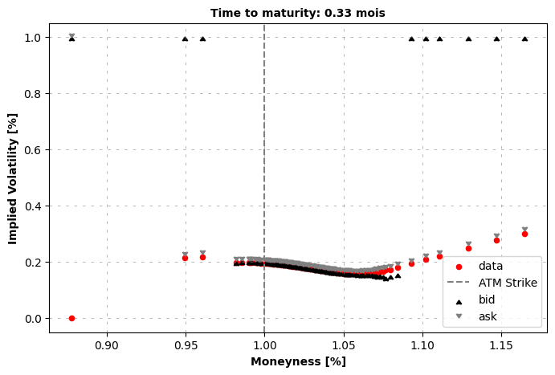
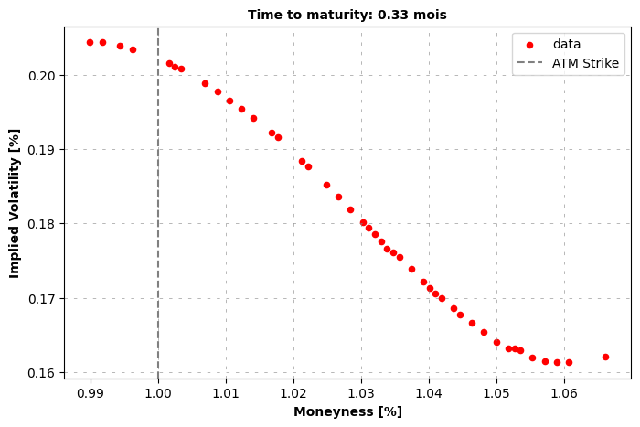
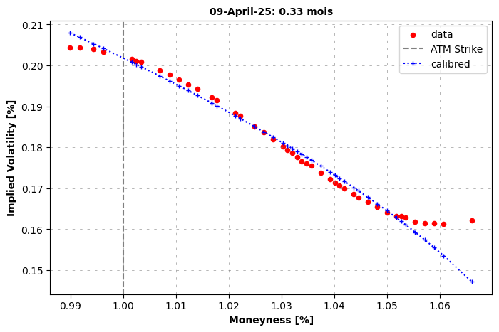
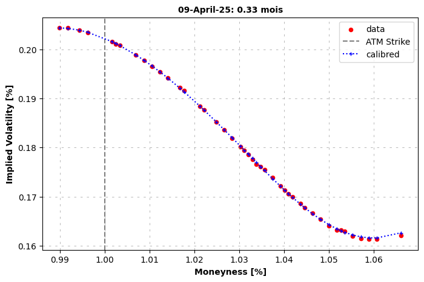

With syntetic market price#
[ ]:
from hestonpy.models.heston import Heston
from hestonpy.models.bates import Bates
from hestonpy.models.calibration.volatilitySmile import VolatilitySmile
r = 0.00
Get market data
[2]:
from hestonpy.option.data import get_options_data, filter_data_for_maturity
all_market_data, spot, maturities = get_options_data(symbol='^SPX')
maturities, spot
[2]:
(('2025-03-31',
'2025-04-01',
'2025-04-02',
'2025-04-03',
'2025-04-04',
'2025-04-07',
'2025-04-08',
'2025-04-09',
'2025-04-10',
'2025-04-11',
'2025-04-14',
'2025-04-15',
'2025-04-16',
'2025-04-17',
'2025-04-21',
'2025-04-22',
'2025-04-23',
'2025-04-24',
'2025-04-25',
'2025-04-28',
'2025-04-29',
'2025-04-30',
'2025-05-01',
'2025-05-02',
'2025-05-05',
'2025-05-06',
'2025-05-08',
'2025-05-09',
'2025-05-16',
'2025-05-30',
'2025-06-20',
'2025-06-30',
'2025-07-18',
'2025-07-31',
'2025-08-15',
'2025-08-29',
'2025-09-19',
'2025-09-30',
'2025-10-17',
'2025-11-21',
'2025-12-19',
'2025-12-31',
'2026-01-16',
'2026-02-20',
'2026-03-20',
'2026-03-31',
'2026-04-17',
'2026-06-18',
'2026-12-18',
'2027-12-17',
'2028-12-15',
'2029-12-21',
'2030-12-20'),
np.float64(5580.93994140625))
[3]:
maturity = maturities[7]
full_market_data = filter_data_for_maturity(all_market_data, maturity)
full_market_data
[3]:
| Call Price | Bid | Ask | Implied Volatility | Strike | Volume | Time to Maturity | Maturity | |
|---|---|---|---|---|---|---|---|---|
| 0 | 820.14 | 657.5 | 675.60 | 0.000010 | 4900.0 | 1.0 | 0.027778 | 2025-04-09 |
| 1 | 506.75 | 270.4 | 288.60 | 0.214546 | 5300.0 | 1.0 | 0.027778 | 2025-04-09 |
| 2 | 297.18 | 218.1 | 236.30 | 0.218949 | 5360.0 | 1.0 | 0.027778 | 2025-04-09 |
| 3 | 188.04 | 135.3 | 136.50 | 0.197213 | 5480.0 | 1.0 | 0.027778 | 2025-04-09 |
| 4 | 243.30 | 121.9 | 123.10 | 0.197678 | 5500.0 | 2.0 | 0.027778 | 2025-04-09 |
| ... | ... | ... | ... | ... | ... | ... | ... | ... |
| 85 | 0.15 | 0.0 | 0.25 | 0.209481 | 6150.0 | 106.0 | 0.027778 | 2025-04-09 |
| 86 | 0.20 | 0.0 | 0.20 | 0.220101 | 6200.0 | 1.0 | 0.027778 | 2025-04-09 |
| 87 | 0.08 | 0.0 | 0.20 | 0.250007 | 6300.0 | 1.0 | 0.027778 | 2025-04-09 |
| 88 | 0.08 | 0.0 | 0.20 | 0.278816 | 6400.0 | 2.0 | 0.027778 | 2025-04-09 |
| 89 | 0.12 | 0.0 | 0.15 | 0.299323 | 6500.0 | 10.0 | 0.027778 | 2025-04-09 |
90 rows × 8 columns
[4]:
time_to_maturity = full_market_data['Time to Maturity'].iloc[0]
strikes = full_market_data['Strike'].values
bid_prices = full_market_data["Bid"].values
ask_prices = full_market_data['Ask'].values
market_ivs = full_market_data['Implied Volatility'].values
market_prices = full_market_data['Call Price'].values
marketVolatilitySmile = VolatilitySmile(
strikes=strikes,
time_to_maturity=time_to_maturity,
atm=spot,
market_ivs=market_ivs,
r=r
)
marketVolatilitySmile.plot(bid_prices=bid_prices, ask_prices=ask_prices)

filter market data
la iv du marché fait pas trop de sens, plutot utiliser
\[\frac{\sigma_{bid}+\sigma_{ask}}{2}\]
[5]:
market_data = marketVolatilitySmile.filters(full_market_data)
marketVolatilitySmile.plot()
market_data

[5]:
| Call Price | Bid | Ask | Implied Volatility | Strike | Volume | Time to Maturity | Maturity | Mid ivs | Ask ivs | Bid ivs | Mid Price | |
|---|---|---|---|---|---|---|---|---|---|---|---|---|
| 5 | 119.75 | 106.10 | 107.30 | 0.197812 | 5525.0 | 18.0 | 0.027778 | 2025-04-09 | 0.204371 | 0.206068 | 0.202673 | 106.700 |
| 7 | 109.77 | 100.10 | 101.30 | 0.197777 | 5535.0 | 34.0 | 0.027778 | 2025-04-09 | 0.204358 | 0.206030 | 0.202686 | 100.700 |
| 8 | 102.21 | 91.60 | 92.30 | 0.196713 | 5550.0 | 192.0 | 0.027778 | 2025-04-09 | 0.203963 | 0.204921 | 0.203004 | 91.950 |
| 10 | 94.59 | 85.70 | 86.80 | 0.196648 | 5560.0 | 21.0 | 0.027778 | 2025-04-09 | 0.203360 | 0.204855 | 0.201865 | 86.250 |
| 13 | 81.38 | 69.80 | 71.00 | 0.195019 | 5590.0 | 15.0 | 0.027778 | 2025-04-09 | 0.201535 | 0.203153 | 0.199918 | 70.400 |
| 14 | 77.20 | 67.30 | 68.50 | 0.194619 | 5595.0 | 13.0 | 0.027778 | 2025-04-09 | 0.201114 | 0.202734 | 0.199495 | 67.900 |
| 15 | 74.13 | 65.20 | 65.80 | 0.193558 | 5600.0 | 83.0 | 0.027778 | 2025-04-09 | 0.200818 | 0.201629 | 0.200007 | 65.500 |
| 19 | 62.53 | 55.60 | 56.70 | 0.192345 | 5620.0 | 15.0 | 0.027778 | 2025-04-09 | 0.198857 | 0.200367 | 0.197347 | 56.150 |
| 21 | 56.23 | 51.20 | 52.30 | 0.191292 | 5630.0 | 36.0 | 0.027778 | 2025-04-09 | 0.197741 | 0.199270 | 0.196212 | 51.750 |
| 23 | 99.17 | 47.00 | 48.10 | 0.190197 | 5640.0 | 12.0 | 0.027778 | 2025-04-09 | 0.196574 | 0.198126 | 0.195023 | 47.550 |
| 25 | 50.90 | 43.00 | 44.10 | 0.189057 | 5650.0 | 12.0 | 0.027778 | 2025-04-09 | 0.195357 | 0.196939 | 0.193774 | 43.550 |
| 27 | 47.60 | 39.30 | 40.30 | 0.187874 | 5660.0 | 26.0 | 0.027778 | 2025-04-09 | 0.194236 | 0.195707 | 0.192765 | 39.800 |
| 30 | 53.38 | 33.90 | 35.00 | 0.186089 | 5675.0 | 11.0 | 0.027778 | 2025-04-09 | 0.192164 | 0.193849 | 0.190480 | 34.450 |
| 31 | 38.49 | 32.50 | 33.10 | 0.184784 | 5680.0 | 325.0 | 0.027778 | 2025-04-09 | 0.191554 | 0.192486 | 0.190621 | 32.800 |
| 35 | 31.10 | 26.00 | 27.00 | 0.182427 | 5700.0 | 20.0 | 0.027778 | 2025-04-09 | 0.188355 | 0.190026 | 0.186684 | 26.500 |
| 36 | 64.49 | 24.60 | 25.60 | 0.181824 | 5705.0 | 10.0 | 0.027778 | 2025-04-09 | 0.187695 | 0.189401 | 0.185989 | 25.100 |
| 39 | 27.50 | 20.80 | 21.30 | 0.178628 | 5720.0 | 94.0 | 0.027778 | 2025-04-09 | 0.185160 | 0.186075 | 0.184245 | 21.050 |
| 41 | 25.40 | 18.20 | 19.10 | 0.177941 | 5730.0 | 14.0 | 0.027778 | 2025-04-09 | 0.183624 | 0.185358 | 0.181890 | 18.650 |
| 43 | 20.79 | 16.00 | 16.80 | 0.176194 | 5740.0 | 30.0 | 0.027778 | 2025-04-09 | 0.181905 | 0.183538 | 0.180272 | 16.400 |
| 44 | 17.22 | 13.90 | 14.80 | 0.174874 | 5750.0 | 12.0 | 0.027778 | 2025-04-09 | 0.180207 | 0.182165 | 0.178249 | 14.350 |
| 45 | 17.30 | 13.00 | 13.80 | 0.173936 | 5755.0 | 17.0 | 0.027778 | 2025-04-09 | 0.179382 | 0.181181 | 0.177582 | 13.400 |
| 46 | 15.12 | 12.10 | 12.90 | 0.173218 | 5760.0 | 28.0 | 0.027778 | 2025-04-09 | 0.178575 | 0.180438 | 0.176711 | 12.500 |
| 47 | 25.38 | 11.20 | 12.00 | 0.172311 | 5765.0 | 14.0 | 0.027778 | 2025-04-09 | 0.177554 | 0.179489 | 0.175619 | 11.600 |
| 48 | 13.03 | 10.50 | 11.00 | 0.170708 | 5770.0 | 10.0 | 0.027778 | 2025-04-09 | 0.176563 | 0.177820 | 0.175305 | 10.750 |
| 49 | 13.34 | 9.70 | 10.40 | 0.170815 | 5775.0 | 16.0 | 0.027778 | 2025-04-09 | 0.176105 | 0.177933 | 0.174278 | 10.050 |
| 50 | 12.42 | 9.00 | 9.70 | 0.170266 | 5780.0 | 60.0 | 0.027778 | 2025-04-09 | 0.175460 | 0.177361 | 0.173560 | 9.350 |
| 52 | 10.76 | 7.70 | 8.30 | 0.168572 | 5790.0 | 10.0 | 0.027778 | 2025-04-09 | 0.173818 | 0.175595 | 0.172041 | 8.000 |
| 54 | 8.34 | 6.50 | 7.10 | 0.167153 | 5800.0 | 28.0 | 0.027778 | 2025-04-09 | 0.172171 | 0.174122 | 0.170219 | 6.800 |
| 55 | 12.72 | 6.00 | 6.50 | 0.166116 | 5805.0 | 14.0 | 0.027778 | 2025-04-09 | 0.171331 | 0.173039 | 0.169623 | 6.250 |
| 56 | 9.95 | 5.50 | 6.00 | 0.165505 | 5810.0 | 26.0 | 0.027778 | 2025-04-09 | 0.170600 | 0.172395 | 0.168804 | 5.750 |
| 57 | 9.25 | 5.00 | 5.60 | 0.165383 | 5815.0 | 10.0 | 0.027778 | 2025-04-09 | 0.169999 | 0.172266 | 0.167733 | 5.300 |
| 59 | 5.75 | 4.20 | 4.70 | 0.163827 | 5825.0 | 11.0 | 0.027778 | 2025-04-09 | 0.168550 | 0.170656 | 0.166445 | 4.450 |
| 60 | 6.72 | 3.80 | 4.30 | 0.163110 | 5830.0 | 11.0 | 0.027778 | 2025-04-09 | 0.167667 | 0.169901 | 0.165433 | 4.050 |
| 61 | 3.88 | 3.20 | 3.60 | 0.161843 | 5840.0 | 211.0 | 0.027778 | 2025-04-09 | 0.166590 | 0.168592 | 0.164587 | 3.400 |
| 62 | 3.50 | 2.65 | 3.00 | 0.160653 | 5850.0 | 32.0 | 0.027778 | 2025-04-09 | 0.165371 | 0.167354 | 0.163388 | 2.825 |
| 63 | 2.63 | 2.20 | 2.45 | 0.159066 | 5860.0 | 202.0 | 0.027778 | 2025-04-09 | 0.164085 | 0.165700 | 0.162470 | 2.325 |
| 64 | 2.32 | 1.80 | 2.05 | 0.158395 | 5870.0 | 107.0 | 0.027778 | 2025-04-09 | 0.163163 | 0.165004 | 0.161321 | 1.925 |
| 65 | 3.40 | 1.65 | 1.90 | 0.158486 | 5875.0 | 71.0 | 0.027778 | 2025-04-09 | 0.163130 | 0.165084 | 0.161176 | 1.775 |
| 66 | 4.93 | 1.50 | 1.75 | 0.158395 | 5880.0 | 33.0 | 0.027778 | 2025-04-09 | 0.162923 | 0.165006 | 0.160841 | 1.625 |
| 67 | 1.72 | 1.20 | 1.45 | 0.157723 | 5890.0 | 23.0 | 0.027778 | 2025-04-09 | 0.161879 | 0.164292 | 0.159467 | 1.325 |
| 68 | 1.41 | 1.00 | 1.20 | 0.157143 | 5900.0 | 74.0 | 0.027778 | 2025-04-09 | 0.161470 | 0.163684 | 0.159255 | 1.100 |
| 69 | 1.07 | 0.80 | 1.05 | 0.157967 | 5910.0 | 40.0 | 0.027778 | 2025-04-09 | 0.161381 | 0.164543 | 0.158219 | 0.925 |
| 70 | 0.92 | 0.65 | 0.90 | 0.158334 | 5920.0 | 99.0 | 0.027778 | 2025-04-09 | 0.161297 | 0.164924 | 0.157670 | 0.775 |
| 74 | 0.82 | 0.35 | 0.60 | 0.160775 | 5950.0 | 20.0 | 0.027778 | 2025-04-09 | 0.162109 | 0.167506 | 0.156712 | 0.475 |
Calibration with an Heston model#
[6]:
params = {
"kappa": 1.25,
"theta": 0.06,
"sigma": 0.6,
"rho": -0.8,
}
heston = Heston(spot=spot, vol_initial=0.06, r=r, drift_emm=0, **params)
initial_params = marketVolatilitySmile.calibration(
price_function=heston.call_price,
guess_correlation_sign='negative',
initial_guess=list(params.values()),
speed='local',
)
initial_guess = [initial_params['kappa'], initial_params['theta'], initial_params['sigma'], initial_params['rho']]
calibrated_params = marketVolatilitySmile.calibration(
price_function=heston.call_price,
guess_correlation_sign='negative',
initial_guess=initial_guess,
power='mse',
speed='global',
)
marketVolatilitySmile.plot(
calibrated_prices=heston.call_price(strike=marketVolatilitySmile.strikes, time_to_maturity=time_to_maturity, **calibrated_params),
maturity=maturity
)
calibrated_params
Calibrated parameters: v0=0.041 | kappa=1.253 | theta=0.083 | sigma=0.514 | rho=-1.000
at minimum 0.142027 accepted 1
Parameters: kappa=1.253 | theta=0.083 | sigma=0.514 | rho=-1.000
at minimum 0.141561 accepted 1
Parameters: kappa=0.029 | theta=1.856 | sigma=0.508 | rho=-1.000
at minimum 0.141567 accepted 1
Parameters: kappa=0.045 | theta=1.189 | sigma=0.508 | rho=-1.000
at minimum 0.141564 accepted 1
Parameters: kappa=0.036 | theta=1.481 | sigma=0.508 | rho=-1.000
at minimum 0.141561 accepted 1
Parameters: kappa=0.030 | theta=1.742 | sigma=0.508 | rho=-1.000
at minimum 0.141562 accepted 1
Parameters: kappa=0.032 | theta=1.655 | sigma=0.508 | rho=-1.000
at minimum 0.141564 accepted 1
Parameters: kappa=0.038 | theta=1.416 | sigma=0.508 | rho=-1.000
['success condition satisfied'] True
Calibrated parameters: v0=0.041 | kappa=0.029 | theta=1.856 | sigma=0.508 | rho=-1.000

[6]:
{'vol_initial': np.float64(0.04061648109278204),
'kappa': np.float64(0.028553188117173153),
'theta': np.float64(1.8562394988036592),
'sigma': np.float64(0.5081268884807789),
'rho': np.float64(-1.0),
'drift_emm': 0}
Calibration with a Baites model#
[7]:
params = {
"kappa": 1.25,
"theta": 0.06,
"sigma": 0.6,
"rho": -0.5,
"lambda_jump": 1.0,
"mu_J": -0.1,
'sigma_J': 0.3
}
bates = Bates(spot=spot, vol_initial=0.06, r=r, drift_emm=0, **params)
initial_params = marketVolatilitySmile.calibration(
price_function=bates.call_price,
guess_correlation_sign='negative',
initial_guess=list(params.values()),
power='mse',
speed='local',
)
initial_guess = [initial_params['kappa'], initial_params['theta'], initial_params['sigma'], initial_params['rho'],
initial_params['lambda_jump'], initial_params['mu_J'], initial_params['sigma_J']]
calibrated_params = marketVolatilitySmile.calibration(
price_function=bates.call_price,
guess_correlation_sign='negative',
initial_guess=initial_guess,
power='mse',
speed='global',
)
marketVolatilitySmile.plot(
calibrated_prices=bates.call_price(strike=marketVolatilitySmile.strikes, time_to_maturity=time_to_maturity, **calibrated_params),
maturity=maturity
)
calibrated_params
Calibrated parameters:
v0=0.041 | kappa=1.211 | theta=0.753 | sigma=1.329 | rho=-0.805 | lambda_jump=3.189 | mu_J=-0.491 | sigma_J=0.052
at minimum 0.002224 accepted 1
Parameters: kappa=1.211 | theta=0.753 | sigma=1.329 | rho=-0.805 | lambda_jump=3.189 | mu_J=-0.491 | sigma_J=0.050
at minimum 0.002204 accepted 1
Parameters: kappa=0.701 | theta=1.260 | sigma=1.319 | rho=-0.805 | lambda_jump=3.180 | mu_J=-0.496 | sigma_J=0.050
at minimum 0.000720 accepted 1
Parameters: kappa=0.489 | theta=1.465 | sigma=1.158 | rho=-0.846 | lambda_jump=3.150 | mu_J=-0.227 | sigma_J=0.125
at minimum 0.000742 accepted 1
Parameters: kappa=0.628 | theta=1.168 | sigma=1.165 | rho=-0.843 | lambda_jump=3.013 | mu_J=-0.443 | sigma_J=0.207
at minimum 0.000618 accepted 1
Parameters: kappa=0.692 | theta=1.073 | sigma=1.186 | rho=-0.855 | lambda_jump=4.495 | mu_J=-0.057 | sigma_J=0.050
at minimum 0.000746 accepted 1
Parameters: kappa=0.921 | theta=0.815 | sigma=1.170 | rho=-0.843 | lambda_jump=3.009 | mu_J=-0.480 | sigma_J=0.221
at minimum 0.000751 accepted 1
Parameters: kappa=1.437 | theta=0.540 | sigma=1.177 | rho=-0.843 | lambda_jump=3.018 | mu_J=-0.464 | sigma_J=0.215
at minimum 0.000756 accepted 1
Parameters: kappa=1.893 | theta=0.422 | sigma=1.183 | rho=-0.843 | lambda_jump=3.022 | mu_J=-0.467 | sigma_J=0.216
at minimum 0.000756 accepted 1
Parameters: kappa=2.082 | theta=0.388 | sigma=1.185 | rho=-0.843 | lambda_jump=3.036 | mu_J=-0.425 | sigma_J=0.201
at minimum 0.000762 accepted 1
Parameters: kappa=2.317 | theta=0.355 | sigma=1.190 | rho=-0.843 | lambda_jump=3.019 | mu_J=-0.500 | sigma_J=0.228
['success condition satisfied'] True
Calibrated parameters:
v0=0.041 | kappa=0.692 | theta=1.073 | sigma=1.186 | rho=-0.855 | lambda_jump=4.495 | mu_J=-0.057 | sigma_J=0.050

[7]:
{'vol_initial': np.float64(0.04061648109278204),
'kappa': np.float64(0.6923585666487466),
'theta': np.float64(1.0728827988086265),
'drift_emm': 0,
'sigma': np.float64(1.1861044273587131),
'rho': np.float64(-0.8549556775813509),
'lambda_jump': np.float64(4.495056249998712),
'mu_J': np.float64(-0.05650398032298261),
'sigma_J': np.float64(0.05000126603766209)}